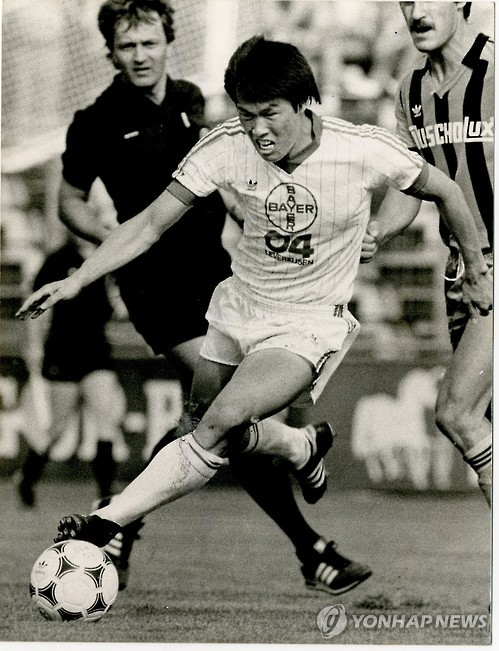

한국축구 전설들
- 손흥민
- 박지성
- 차범근
차범근
차범근(車範根, 1953년 5월 22일 ~ )은 대한민국의 은퇴한 축구 선수로, 현재 축구 지도자, 해설가, 평론가로 활동하고 있다. 선수 시절 포지션은 공격수이며, 1980년대에 한국인 선수로는 최초로 독일의 프로 축구 리그인 푸스발-분데스리가에서 활약하였고, 다름슈타트, 아인트라흐트 프랑크푸르트, 바이어 레버쿠젠 소속으로 뛰었다. 1972년부터 1986년까지 대한민국 축구 국가대표팀의 주전 공격수로 활약했으며, 최다 득점 선수로 기록되었다. 그는 두 번의 아시안 게임에 참가하여 1978년 아시안 게임 축구에서 금메달을 획득하는 데에 기여했고, 1972년 AFC 아시안컵 준우승을 차지했다.
